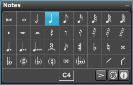

If the Notes palette is not showing click on the Score Tools button on the control bar or type "Shift-T" and then click on the Symbols section in the header if it's not active.
You can also type Ctrl[Cmd]-Shift-S" to go directly to the Symbols section.

Note: Anytime you click on a symbol in any palette, Overture will automatically switch to Insert mode.
To enter notes using your mouse:
'0' - breve note
'1' - whole note
'2' - half note
'4' - quarter note
'8' - eighth note
'6' - sixteenth note
'5' - thirty second note
'3' - triplet value as set in the tuplet dialog
'.' - dotted note value
In addition you can click on the Slash or Rhythmic head symbol to change the note head type or choose to add an accent or staccato dot using the pop-up menu at the bottom right of palette.
With the note selected in Insert mode (Pencil tool) you can:
With the note selected in Select mode (Arrow tool) you can also: